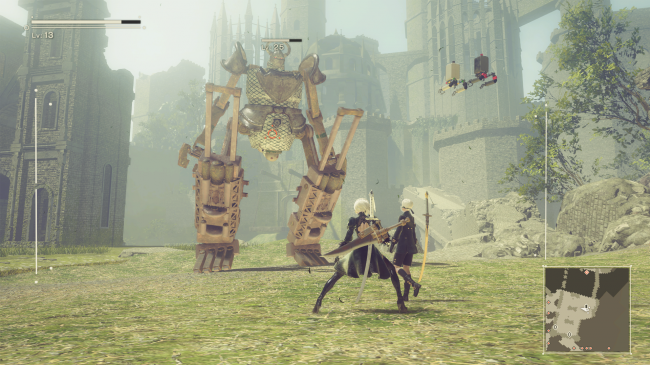

THE HUNTER: CALL OF THE WILD
Wild boar. Blacktail deer. Roosevelt elk. European bison. Beautiful, majestic creatures, all of which I’ve killed with a big gun in The Hunter, a semi-realistic hunting simulator set across two vast rural landscapes in Germany and America’s Pacific Northwest. But you can’t just sprint around firing your rifle like a Call of Duty protagonist: you have to be slow, quiet, and methodical if you want to bag one of the many furry trophies on offer.

Being a simulator, there’s more to a successful hunt than pointing your gun at the first creature you see then shooting it. There are a lot of places in the woods for an animal to hide, and your first job is usually tracking one down, which can take a while. As you creep through the trees you’ll see tracks highlighted on the HUD. Interact with them and your character will use his magical hunter senses to determine which direction the animal is moving in. Then it’s just a case of patiently following the tracks, trying not to make too much noise, until you catch up with it. But that’s only half the battle.
I love weird, niche simulators like this, but besides enjoying hiking through its stunning wilderness, I found The Hunter far too dull to hold my attention. But that’s exactly why some people will like it, so you’ll have to decide if you’re the type of gamer who can endure prolonged periods of inactivity for short, sweet rewards. It does at least have some depth and scope for mastery, and tracking and killing tougher animals like black bears is a genuine test of skill. But the real test is ultimately staving off boredom.
Other Reviews
DESYNC

NIER: AUTOMATA
GHOST RECON WILDLANDS

MASS EFFECT: ANDROMEDA